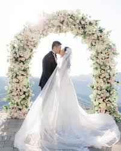

Smaller weddings are here to stay. Couples are choosing close-knit celebrations that feel personal and stress-free—without compromising on beauty or hospitality. Here’s why intimate is the new grand.
Benefits of Smaller Weddings
Quality time: actually meet and talk to everyone you invited—photos feel candid and memories feel real.
Less stress: fewer moving parts, smoother logistics, and better attention to detail.
Premium within budget: upgrade food, décor, and photography because your budget stretches further.
More Personalization
- Custom vows, family rituals, and personalized playlists.
- Curated menus with couple favorites (yes, that special dessert counter!).
- Photo corners with your story timeline and engagement photos.
Better Budgeting
- Spend where it matters—venue ambience, lighting, photography, and guest experience.
- Choose a smaller but premium venue instead of a large compromise.
- Fewer guests = fewer returns (transport, accommodation, favors).
Quality Over Quantity
When the guest list is intentional, moments feel meaningful. Toasts are heartfelt, ceremonies don’t feel rushed, and hospitality feels personal.
How We Help
- Venue shortlisting for 50–150 guests with beautiful backdrops.
- Minimalist décor plans and mood boards.
- Intimate seating, warm lighting, and compact entertainment setups.
Thinking of an intimate celebration in Jaipur? Let’s plan it together →
Rajdhani Events
RTH